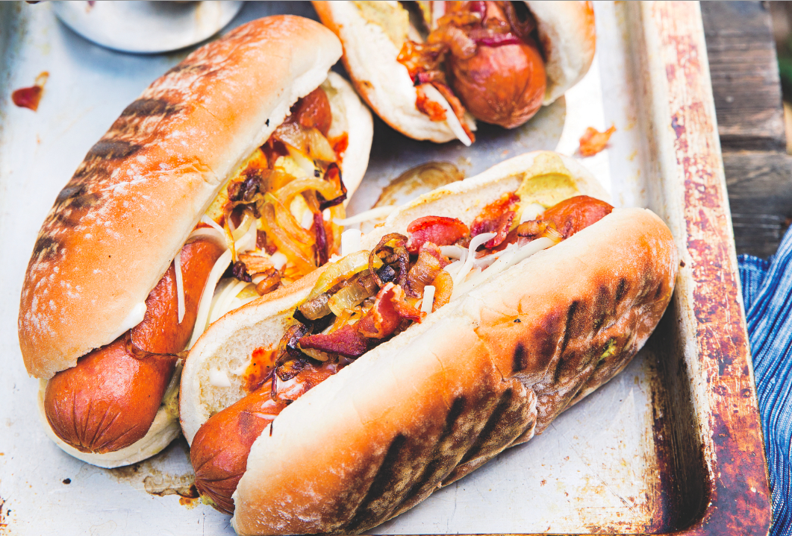

Cowboy Style Hot Dogs

Description
“The aroma of caramelizing onions builds anticipation for these over-the-top bison dogs, loaded with the onions — plus bacon and barbecue sauce.”
“The aroma of caramelizing onions builds anticipation for these over-the-top bison dogs, loaded with the onions — plus bacon and barbecue sauce.”